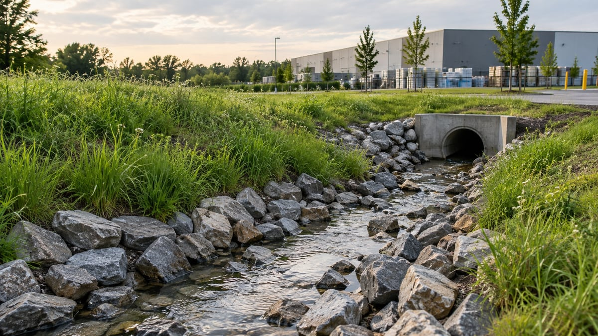
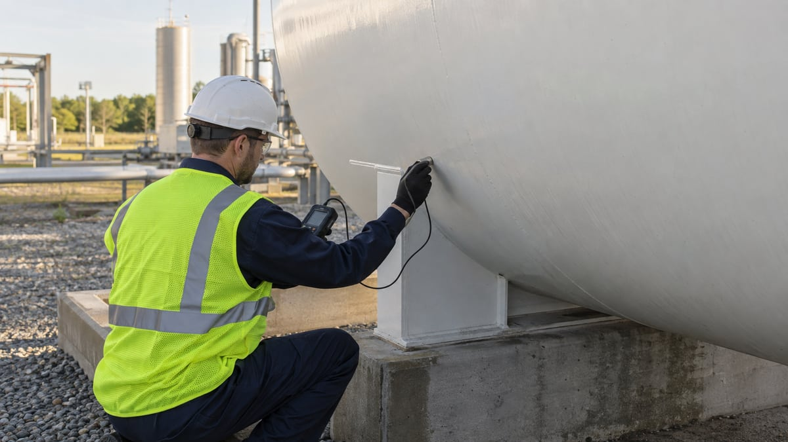

Environmental reporting
Get your environmental reporting organized.
Bring your reporting questions to a team that works with facility inventories, chemical information, site documentation, and environmental submissions.
Discuss your projectA good time to get in touch.
- You need help preparing a Tier II report.
- Your chemical inventory or facility operations have changed.
- You want to discuss TRI or other environmental reporting needs.
How we can help.
- Review and organization of chemical inventory information
- Assistance with quantity calculations and supporting records
- Tier II reporting and related site documentation
- Discussion of TRI and other reporting needs within an agreed scope
Before we get started
Common questions.
Can you help with our chemical inventory?
Yes. We can discuss the records you have and the information needed for your reporting project.
Do you handle more than Tier II?
Our services include TRI and Tier II reporting. Describe any other reporting questions so we can confirm the appropriate scope.
What if a deadline is approaching?
Include the deadline in your inquiry or call the team directly so timing can be discussed before work is scheduled.
Need more than one service?
We can discuss connected needs together.
SPCC plans
New plans, plan updates, and practical implementation support.
Explore service
02Stormwater plans & permits
Site-specific planning and help navigating permit requirements.
Explore service
03Tank inspections
Aboveground steel tank inspections and integrity testing.
Explore serviceOne facility or several. Let’s talk about what you need.
Start with your service, location, and timeline.